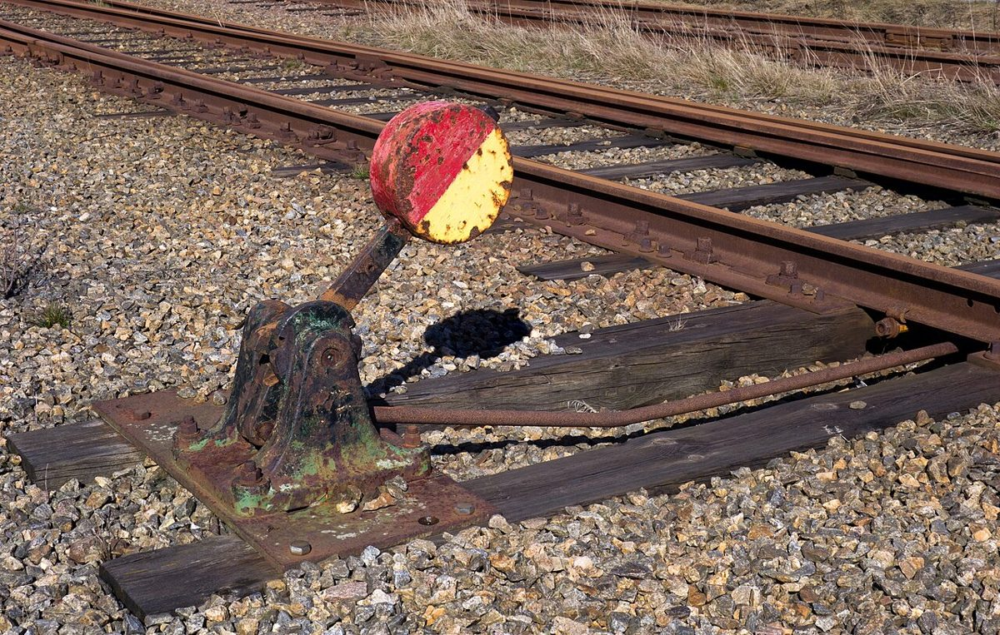
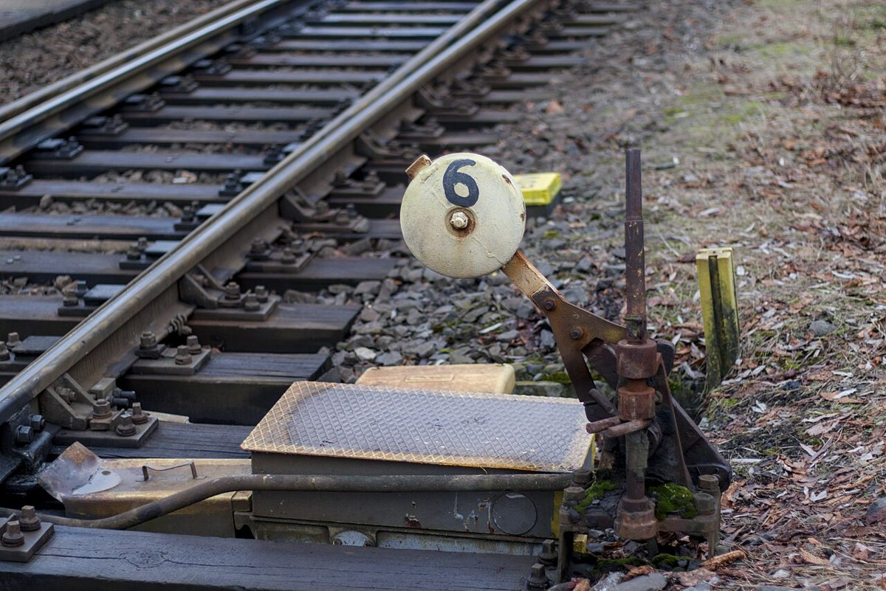
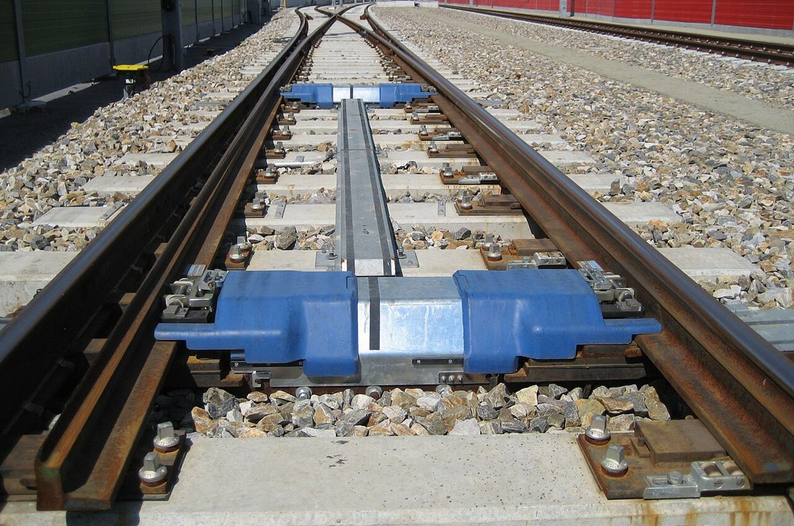

このページの「想像してみる」部分は、制作側が想像して書いたものです。お店の実際の様子・考え・メニューとは関係がありません。
確認できていること
- 店名は「TEISHABA cafe」、業種はカフェ
- 所在地は徳島県海部郡美波町奥河内弁才天75-15(〒779-2305)
- Instagramのアカウントは @teishaba_cafe
- 電話番号はなし。連絡はInstagramから
- 営業時間・定休日・メニュー・価格・ご予約・駐車場は準備中

想像してみる
「停車場」という言葉から
由来は分かりません。制作側は、「停車場」という言葉から、立ち寄る・ひと息つく・次へ向かう、といった場面を連想しました。実際のお店の姿ではなく、このサイトの見せ方のための連想です。


